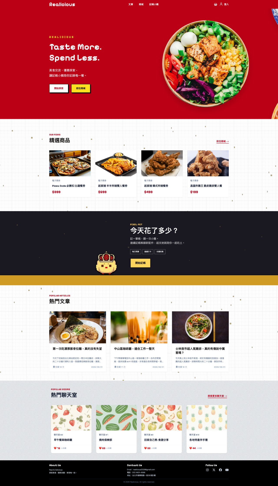
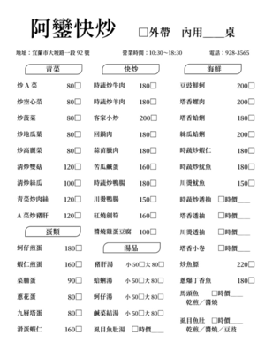
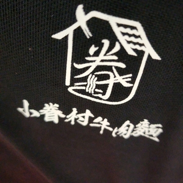

你好 我是
許呈華
前端工程師
在餐飲業有六年的工作經驗，想要學習新的知識，轉換跑道，於是參加資展國際(原資策會)前端工程師就業養成班，完成共498小時的課程，掌握了 HTML、CSS、Tailwind CSS、RWD、JavaScript、TypeScript、React.js、Next.js(App Router)、Node.js、Express、MySQL、Git / Github 等等的技術，期待能在未來的工作中創造更多價值。

技術
前端
- HTML
- CSS
- JavaScript
- React
- TypeScript
- Next.js (App Router)
後端
- Node.js
- Express
- MySQL
其他
- Git / Github
- Figma
自我介紹
我曾在餐飲業累積六年的工作經驗，這段經歷讓我培養出以使用者需求為核心的思考方式。我相信，無論是提供一份餐點或設計一個網站，最終目的都是解決使用者的需求，並帶來良好的體驗。因此，在學習前端開發的過程中，我也始終以使用者角度思考介面設計與互動流程，希望打造兼具易用性與品質的產品。
餐飲工作也培養了我面對問題的能力。每天都可能遇到各種突發狀況，而我不只專注於當下的處理，更習慣追蹤問題成因、檢討流程並建立預防機制。我認為這與軟體開發中除錯的思維十分相似，修復
Bug
只是第一步，更重要的是找出根本原因，持續優化流程與程式品質，提升系統的穩定性與效率。
轉職的過程中，我持續投入技術的學習，熟悉
HTML/CSS/JavaScript、React、Node.js、MySQL等技術，並透過實作專案累積開發經驗。我期待將過去累積的工作態度與問題解決能力，結合軟體開發技能，成為一位能夠發現並解決使用者問題的軟體工程師。
作品集

食刻 - Realicious 美食評論網站
開發背景：本專案為 4人團隊 協作開發之前後端分離 Web
應用程式。
主要目的：提供使用者瀏覽熱門餐廳、發表食記、在線討論交流、購買電子票券、記帳，並包含完整的會員權限管理系統。
我主要負責 「 會員管理系統 」與「 多人線上聊天室 」 的設計與實作：
-
會員身分驗證與安全機制：
- 採用 JWT 認證機制 管理會員登入狀態與權限控管。
- 使用 bcrypt 實現密碼雜湊加密，確保使用者憑證安全
-
即時聊天室：
- 使用 Web Socket 的技術做到即時訊息推播、頻道劃分、以及連線狀態管理 ( 採用 Socket.io 套件 )
-
API 規劃與實作：
- 設計完整會員系統、聊天室 API 。
-
資料庫 Schema 設計：
- 規劃會員及聊天室相關資料表結構，並確立與其他區塊（如文章/購物）的關聯。
-
Prisma ORM：
- 使用 Prisma 來管理資料表，並建立測試假資料 seed。
-
第三方登入：
- 使用者可用 google 帳號進行登入
-
自訂大頭貼：
- 可選擇預設可愛小雞圖片或是自行上傳大頭貼
- google 登入自動代入 google 帳號大頭貼
-
響應式網頁設計：
- 負責登入頁、註冊流程、會員中心、聊天室、側邊欄的設計
-
email驗證：
- 註冊或忘記密碼時，需驗證 email，使用 nodemailer 套件發送驗證信件
經歷
資展國際(原資策會)
第74期 前端工程師就業養成班 498小時
專案名稱：Realicious
專案內容：美食評論網站，讓使用者可以發表文章評論美食，也可以在聊天室線上即時討論聊天，可購買美食商品卷
負責項目：完整會員功能、即時線上聊天室

阿鑾快炒
公司介紹：家族經營之傳統小吃店，販售炒飯、炒麵、乾麵、滷肉飯等等中式餐點，以及家常快炒、小菜、湯品。
工作內容：主要工作內容是食材前置處理、餐點製作、點餐收銀、服務客人等等。
擔任職務：平常在團隊裡擔任控場的角色，協助團隊在尖峰時段有效率的服務客人，提升顧客滿意度。

小眷村牛肉麵 昌平店
公司介紹：在台中的連鎖牛肉麵店，以眷村口味為特色，目前有四間分店
工作內容：主要是內場食材前置處理、餐點製作，但實際上團隊是分工合作的需要互相支援，因此也需要服務客人
擔任職務：此分店是小眷村牛肉麵的中央廚房，大部分需長時間製作的產品，會先製成半成品之後再交由分店處理，我負責中央廚房的工作，此崗位需具有責任感，以及對品質有要求。
蘭城晶英酒店 百匯自助餐廳
職位：廚房助手
工作內容：食材前置處理、餐點製作